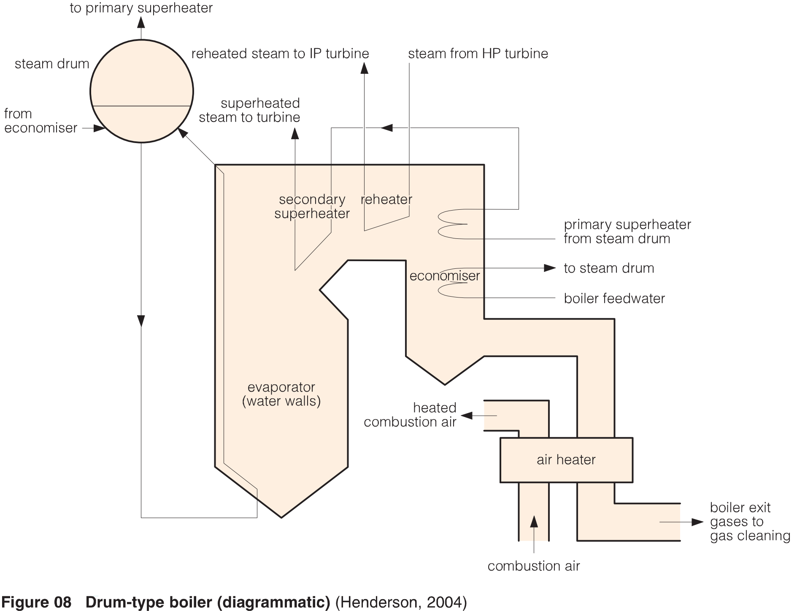
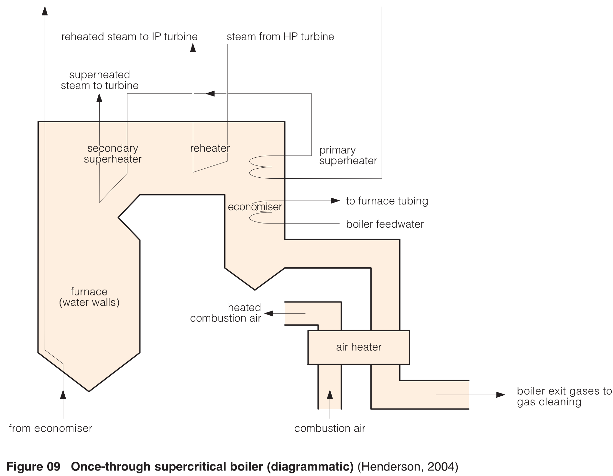
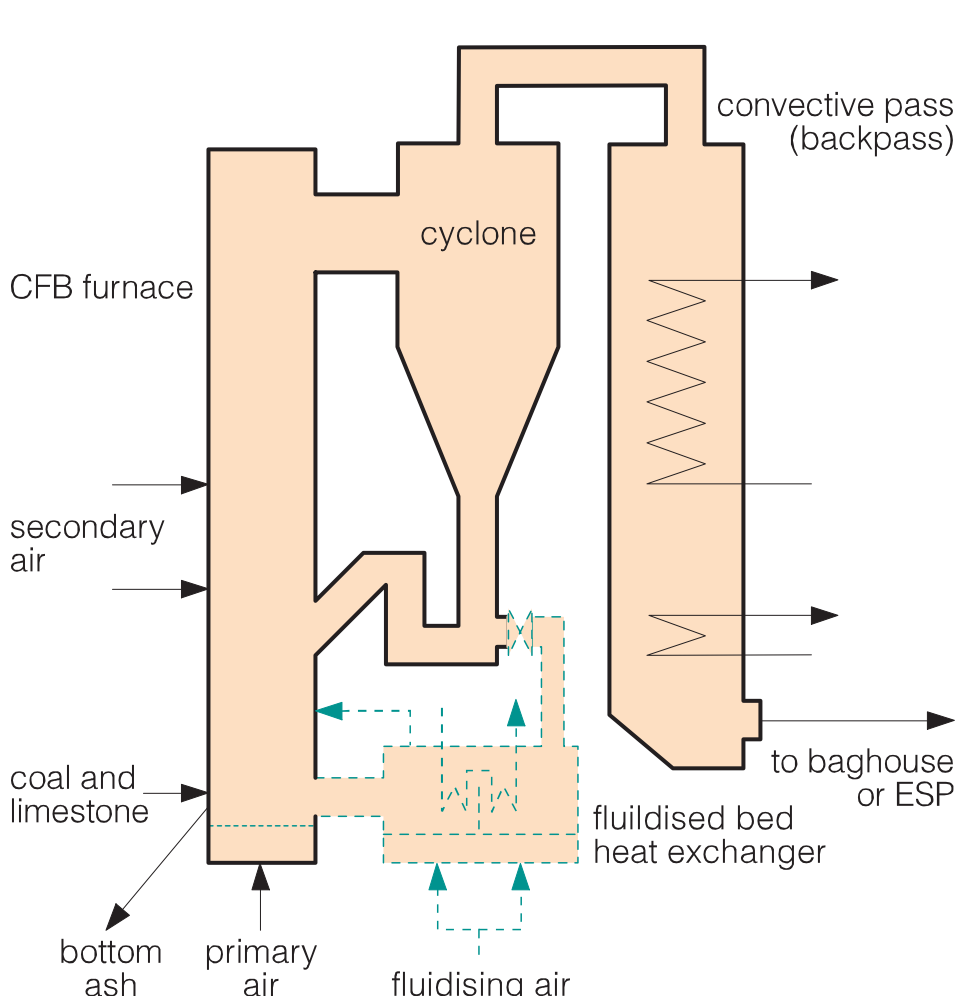

Termelétricas a carvão
Created Sunday 24 January 2016
TECNOLOGIAS PARA A COMBUSTÃO DE CARVÃO
A forma mais simples para a combustão de carvão consiste na queima em fogueiras abertas e pequenos fornos. A pesar da baixa eficiência, essas aplicações estão limitadas quase a uso domestico. Fornos industriais simples podem ser alimentados manualmente, embora instalações maiores requerem algum tipo de alimentador mecânico para abastecer o combustível à taxa adequada. Nesse caso, ventiladores são também requeridos para alimentar ar suficiente para uma boa combustão (Adams et al., 2007).
As fornalhas usadas na geração de potência são vários ordens de grandeza maiores em termos de capacidade e requerimentos carvão, conduzindo ao desenvolvimento de gerações sucessivas de sistemas de combustão de carvão pulverizado. Fornalhas tipo ciclone, as quais podem ser alimentadas também com carvão moído, representam uma etapa intermédia de desenvolvimento e tem sido usadas na geração de eletricidade e em aplicações industriais. A rota para a criação e melhoramento da tecnologia de combustão de carvão aponta para a geração de vapor com maior níveis de ressuperaquecimento e reaquecimento para aumento da eficiência da conversão de energia (Adams et al., 2007).
Fornalhas em leito fluidizado são uma alternativa às fornalhas de carvão pulverizado. Considerando que esse tipo de tecnologia foi transferido de outro campos de aplicação, instalações antigas são comumente menores do que as de carvão pulverizado e por tanto, o foco de desenvolvimento nos últimos anos está na implementação de unidades de maior porte com as vantagens que implica esta tecnologia (Adams et al., 2007).
As fornalhas a carvão pulverizado são atualmente as mais usadas na geração de eletricidade em base a carvão e o uso de vapor supercrítico é norma para novas instalações em países industrializados. Porem, a maior parte de das termelétricas ainda usam tambores de vapor. As propriedades da água limita a eficiência das plantas (em ciclo Rankine) a mais ou menos 40% (baseado no PCI do combustível). O desenvolvimento de novos materiais permitiriam plantas com eficiências de 50% no curto prazo e de ate 60% de mediano prazo (Adams et al., 2007).
Atualmente caldeiras de leito fluidizado tem atingido o porte necessário para condições supercríticas (e.g. uma unidade de 460 MWe instalada na Polônia) e o uso de leito fluidizado pressurizado tem sido espalhado comercialmente, embora o numero de unidades seja ainda pequeno (Adams et al., 2007).
Diferenças nas condições de combustão
As condições de combustão variam, especialmente em relação à taxa de aquecimento, temperatura de queima e tempo de combustão. Fornalhas de leito fluidizado (FBC) tem uma taxa de aquecimento de aproximadamente 100 K/s (para leitos pressurizados, dependendo do tamanho de partícula), uma temperatura de combustão de 800-900°C e um tempo de combustão de minutos. De outro lado, as fornalhas a carvão pulverizado (PC) tem uma maior taxa (~104-106 K/s), temperaturas de ate acima dos 1500°C e tempos de queima de frações de segundos (Adams et al., 2007).
Qualidade do carvão
Enquanto as fornalhas PC trabalham com diversos tipos de cavão, alguns tipos são mais adequados do que outros. Carvão betuminoso de alto rank e media volatilidade e o tipo mais comumente usado quando seu fornecimento é economicamente viável. Uma unidade PC projetada para carvão de baixa qualidade o com problemas de encrustamento são geralmente mais custosas para construir e manter e sua eficiência é geralmente baixa. Para caldeiras mais eficientes que trabalham com vapor supercrítico existem requerimentos adicionais relacionados com o controle de corrosão a altas temperaturas (zona convectiva da fornalha) e de incrustações (Adams et al., 2007).
Fornalhas de leito fluidizado circulante (CFBC) tem a vantagem de que são capazes de queimar os combustíveis de pior qualidade, de que são relativamente compactas e cumprem com os padrões de emissões sem necessidade de um equipamento custoso. Porém, o uso de materiais de baixa qualidade implica problemas durante a sua preparação, manuseio e alimentação e também na remoção e manuseio de cinzas, principalmente dado a alta umidade e teor de cinzas (Adams et al., 2007).
Temperatura de saída dos gases (FEGT)
A temperatura de saída dos gases (FEGT) é um parâmetro de projeto importante. Uma FEGT excessiva indica uma rápida acumulação de depósitos de escoria nas superfícies convectivas. Quando é preciso trabalhar com varias qualidades de carvão, geralmente especifica-se uma FEGT relativamente baixa (Adams et al., 2007).
A FEGT é um parâmetro importante porque altera as condições das cinzas leves que entram na zona convectiva da fornalha. Durante a combustão, as partículas de carvão atingem temperaturas entre 1400°C e 1700°C, nessas temperaturas, a maior parte das cinzas são fundidas ou abrandadas. Se essas partículas se colam às paredes de água, os depósitos de escoria interferem seriamente na operação da caldeira. Por essa razão, a fornalha é uma caixa vazia projetada para evitar o contato entre as partículas e a superfície dos tubos. A altura, área horizontal e superfície de troca de calor são projetadas para garantir que a combustão seja essencialmente completa e o gás suficientemente esfriado antes de que ele entre a zona convectiva da fornalha.
Se a temperatura de entrada à zona convectiva e alta demais, as partículas de cinza leve estarão fundidas e possivelmente vão se aderir às superfícies dos tubos, formando um deposito que vai favorecer uma maior acumulação de material sobre sua superfície. Enquanto o grossor do deposito aumenta, a sua temperatura superficial aumenta a uma razão entre 30 e 100°C/mm, dependendo da sua condutividade térmica e do fluxo de calor local. Com esse aumento de temperatura, a viscosidade das cinzas fundidas diminui e portanto sua tendencia a colar aumenta.
Os depósitos geralmente são consolidados por meio da sinterização e sulfonação, produzindo incrustações as cuais acarretam sérios problemas como:
Diminuição da troca de calor. Quando comparado com os tubos limpos, a troca de calor pode se reduzir à metade em uma hora e ate um quarto depois de um dia. A redução da troca de calor implica um aumento de temperatura nos componentes da fornalha o que pode ocasionar sinterização.
- Aumento das taxas de corrosão e erosão. Esse aumento pode ser associado diretamente com a deposição de cinzas ou causados pelo aumento da frequência das operações de remoção de cinzas (injeção de jatos de vapor sobre os depósitos).
A pesar de que a temperatura de fusão de cinzas tem sido amplamente usada por muitos anos como referencia para determinar a FEGT, recentemente foi reconhecida a importância do teor de material mineral do carvão para a caracterização de sua tendencia para a formação de escoria e incrustações. Adicionalmente, a seleção da FEGT ótima pode ser influenciada pela experiencia em plantas semelhantes. Por exemplo, para carvões de media para alta tendencia de formação de escoria, tem se recomendado uma FEGT entre 950 e 980°C. Para termelétricas rodando com carvão betuminoso, a FEGT é normalmente 1250°C.
Aspectos ambientais
É importante ter em mente que a redução de emissões de CO2 só a partir do melhoramento da eficiência térmica das plantas de geração de potência esta limitada ate um máximo de 30%, comparado com aquelas geradas por uma fornalha PC subcrítica e que novas tecnologias de zero emissões serão necessárias (Adams et al., 2007).
Ciclos de potência
Algumas características e parâmetros dos ciclos de potência são apresentados a continuação (Adams et al., 2007):
- A eficiência isentrópica das turbinas a vapor estão comumente entre 80-95%.
- A entalpia do vapor alimentado à turbina deve ser aumentada para atingir uma alta eficiência e garantir uma qualidade menor a 10% no vapor de saída da turbina.
- A eficiência (PCI) de uma turbina a gás está em torno de 30%. Usualmente o ar é comprimido em torno de 1.5 MPa. Os parâmetros chave são a vazão de ar (altera a potência), a temperatura de entrada à turbina (aprox. 1400°C em modelos recentes) e a razão de pressão (saída do compressor/saída da turbina); os dois últimos parâmetros afetam a eficiência do ciclo. Os gases de exaustão saem comumente entre 550-600°C.
- A eficiência (PCI) de um ciclo combinado está em volta de 58%. O uso de carvão como combustível de uma turbina a gás pode ser de duas formas: usando fornalha FCB pressurizada (PFBC) como combustor da turbina, e com um ciclo combinado com gaseificação integrada (IGCC).
- A eficiência (PCI) de um ciclo subcrítico com fornalha PC está em torno de 40%. A temperatura do vapor superaquecido é geralmente superior aos 540°C.
- A eficiência (PCI) de um ciclo supercrítico com fornalha PC está em volta de 42%.
- A eficiência (PCI) de um ciclo ultrasupercrítico com fornalha PC está em torno de 45-47%. Condições usadas aproximam-se a 30 MPa e 600°C.
- A eficiência (PCI) de um ciclo com fornalha CFBC está em volta de 39%.
- A eficiência (PCI) de um ciclo com fornalha PFBC está em volta de 44%. Fatores determinantes do desempenho desse tipo de ciclos incluem o uso do carvão, características da turbina a gás, filtragem do gás e potência dos sistemas auxiliares. Esse sistema anda está em desenvolvimento; pressões de 1-1.5MPa e temperaturas de combustão de ate 850°C foram atingidas em unidades de demonstração.
Caldeiras de Carvão pulverizado

Temperaturas de operação
Caldeiras PC subcrítico tipo tambor aquece a água pressurizada e preaquecida desde aprox. 250-260°C ate uma temperatura acima dos 540 °C para enviá-lo para a turbina de alta pressão. Uma caldeira supercrítica aquece a água pressurizada e preaquecida desde aprox. 260-300°C além do ponto critico da água (22.1 MPa, 374 °C). Em ambas, vapor de pressão intermediaria oriunda da turbina de alta pressão é reaquecido à temperatura da corrente de vapor principal e retornado à turbina de pressão intermediaria.
Zonas de operação
A evaporação ocorre usando o calor radiante da caldeira e é transferido à tubulação que forma as paredes da zona de combustão da fornalha. a corrente multifásica é separada no tambor de vapor e a água retorna ao evaporador (PC subcrítico). O vapor do tambor é conduzido ao superaquecedor primário.
Em ambos tipos de caldeira, as superfícies de troca de calor dos superaquecedores e reaquecedores estão montadas acima (zona convectiva) da fornalha. A última parte da seção convectiva da fornalha forma o economizador que preaquece a água de alimentação ate aprox. de 60 °C embaixo da temperatura de evaporação para enviá-la ao sistema de circulação tambor/evaporador. O economizador usa os gases de exaustão a uma temperatura acima dos 350 °C. Calor de baixa temperatura (100-150°C) é usado para preaquecer o ar de entrada à fornalha.
A utilização adequada do calor de baixa temperatura nas fornalhas permitem altas eficiências (90-94%, baseado do PCI). Uma distribuição grossa do uso do calor da fornalha (ciclo subcrítico) seria assim: aprox. 8% no economizador, 35-45% no evaporador, 30-40% no superaquecedor e 15% no reaquecedor.
Temperação
Para o controle das temperaturas do vapor, unidades de temperação do vapor reaquecido e superaquecido são provistas de injeção de água de alimentação da caldeira entre as etapas de aquecimento. Água de temperação pode ser coletada a diferentes condições de pressão e temperatura:
- Água de alimentação antes do evaporador ou da saída da bomba de alimentação para temperação do vapor superaquecido.
- Da saída da bomba de alimentação principal para o vapor reaquecido.
Outras formas de controle
Outras formas de controle consiste em alterar a taxa de troca de calor:
- Mudando a orientação dos queimadores para abaixo.
- Recirculando gases de exaustão.
- Ajustando a vazão de ar à fornalha.
Diferenças das fornalhas PC supercríticas

As fornalhas PC supercríticas tem economizadores menores porque o sistema de preaquecimento da água de alimentação com vapor produz água com uma temperatura maior. Além carece de tambor e de sistema de recirculação, por tanto a forma, o material e colocação (a tubulação sobe em forma de espiral, não vertical) da tubulação é diferente para evitar o sobreaquecimento dos tubos.
Aquecimento da água de alimentação
Aumentar a temperatura da água de alimentação aumenta a eficiência do ciclo, mas reduz a potência do ciclo por cada quilograma de vapor produzido (aumenta o consumo de vapor específico). Para uma planta subcrítica de 18 MPa, uma temperatura de 260°C é típica. Ciclos supercríticos atingem temperaturas de ate 300 °C. Normalmente a água de alimentação é aquecida com vapor extraído do trem de turbinas em trocadores de calor indiretos. Adicionalmente no desareador, usado para diminuir a concentração de oxigênio para evitar a corrosão, também a água é aquecida por contato direto. O bombeamento da água é comumente feito em duas etapas: a primeira (0.5-1 MPa) para os trocadores de baixa pressão e desareador e uma segunda etapa ate a pressão do vapor principal para os trocadores de alta pressão antes de entrar no economizador.
Os trocadores de calor precisam ser projetados para atingir pinch points mínimos para diminuir seu tamanho e custo. A temperatura do vapor condensado nos trocadores (extraído) geralmente é 5°C maior do que a temperatura de entrada da água de alimentação. O trocadores de calor geralmente são de casco e tubos.
parâmetros que influem o desempenho do ciclo
Depois do investimento inicial ....(pagina 40)
IMPACTO DAS CARACTERÍSTICAS DO CARVÃO NA COMBUSTÃO
As fornalhas PC subcríticas são bastante flexíveis em termos do tipo de carvão alimentado. Varias plantas usam carvões de baixa qualidade e baixo rank no mundo todo. Em contraste, muitas plantas supercríticas foram projetadas para trabalhar com carvão de alta qualidade.
Cinzas
As cinzas podem-se depositar sobra as superfícies de troca de calor e podem causar bloqueio parcial dentro dos bancos de tubos. Isto pode acarretar um acréscimo na velocidade dos gases de exaustão, e portanto na taxa de erosão. Corrosão também pode acontecer na superfície do tubos. Todos esses fatores afetam a eficiência da planta e o custo da eletricidade. Os principais efeitos associados com cinzas listam-se a seguir:
Redução da troca de calor causada por depósitos sólidos e líquidos nas superfícies de troca.
- Formação de superfícies pegajosas que depois coletam mais partículas
- Incrustações na seção convectiva da fornalha pela condensação de especies voláteis
- Formação de grandes clínqueres nas tubulações. Esses podem pesar varia toneladas e entortar os tubos.
- Acréscimo nas velocidades de erosão e corrosão.
- Quedas de grandes quantidades de escoria durante a operação.
Muitos carvões de baixo rank contem altas concentrações de metais alcalinos que influenciam o abrandamento e fusão das cinzas e estão associadas a problemas de incrustação e corrosão.
Levando em conta que os tubos dos trocadores de mais alta temperatura (superaquecimento e reaquecimento) estão sujeitos a corrosão externa pelas cinzas e interna pelas impurezas da água/vapor, com alguns carvões pode se apresentar altas taxas dessas tubulações.
Umidade
carvões com alto teor de umidade requerem geralmente de fornalhas maiores, pois a vazão mássica dos gases de exaustão aumenta junto com a umidade do carvão. Também pode ser recirculada ate 40% desses gases para secar o carvão alimentado (o que acarreta um projeto de fornalha para a circulação de 140% da massa de gases produzidos pela combustão).
Cerca do 13-20% da energia do combustível pode ser gasta na evaporação da umidade. A grande desvantagem disso é a utilização de uma corrente de temperatura alta (acima dos 900°C) para evaporar uma sustância que evapora a 100°C.
De outro lado, secadores de leito fluidizado podem ser usados com o calor rejeitado de baixa temperatura (ativados com vapor de baixa temperatura (130-150°C)).
Fornalhas de leito fluidizado
Vantagens de uso
- São capaces de usar combustíveis de baixo poder calorífico tais como materiais residuais oriundos dos processos de beneficiamento de carvao, xistos, etc.
- Sao capaces de usar combustiveis com alto teor de cinzas, os quais produziriam grandes custos de manutencao nos pulverizadores.
- Sao capaces de lidar com combustíveis com uma alta e variavel porcentagem de volateis, os quais poderiam apresentar dificuldades para manter uma comustao estavel.
- Facil remosao de enxofre.
Operacao
- Trabalham com excesso de oxigenio a temperaturas entre 800-900°C.
- O carvao usado é alimentado com tamanhos de partícula comumente entre 3-6mm.
- As particulas sao mantidas em suspencao mediante um fluxo de ar a traves de uma grilha na parte inferior do equipamento.
Formatos
- Borbolhantes: o tamanho de particula e a velocidade do ar sao balanceados de tal forma que o leito apresenta uma superficie definida. a velocidade do ar está entre 1-3 m/s
- Circulantes: a velocidade do ar é maior (4-6 m/s - dependendo da erosividade do combustivel) e não se apresenta uma superficie definida. Particulas sao arratradas pela parte superior do combustor e passam a traves de um ciclone refratario. as particulas grossas separadas pelo ciclone retornam no combustor e podem ser recirculadas ate atingir virtualmente a combustão completa.
Leito fluidizado borbolhante
Uso
- Geralmente são usadas em pequenas caldeiras (ate 20-25 MWe).
- Tem sido implementadas para queima de rejeitos carbonosos oriundos das operacoes de beneficiamento de carvao na China e na India.
Configuracao
- O leito comumente comtem cinzas de carvao, calcareo (pirolizado e sulfatado) e em alguns casos, inertes.
- Os tubos principais para troca de calor estao inseridos dentro do leito em equipamentos de queima de carvao. Para fornalhas a biomassa isso não sempre acontece.
- O material mineral liberado da combustão é decantado, existindo alguma pédida de carvao nao combusto e calcareo nao usado.
Leito fluidizado circulante

caldeiras de leito fluidizado circulante sao amplamente usados e bem establecidos em tamanhos entre 30-250 MWe. Todas usando ciclos de vapor subcriticos.
Operacao
- A vazao de ar é aplicada no combustor em duas etapas para manter a combustao e minimizar a producao de NOx.
- A evaporacao acontece em paredes de agua.
- No ciclone, as cinzas sao separadas para manter um balanco constante de solidos no equipamento.
- Em alguns equipamentos, os solidos recirculados sao alimentados a um trocador externo, onde parte da evaporacao, superaquescimento ou reaquecimento podem ser efetuadas.
- Material mais fino passa a traves da fornalha e o ciclone com os gases de escape e é coletado por filtros de saco ou precipitadores eletroestáticos
Oportunidades de melhoramento
- reducao do carvao incombusto durante a remosao de solidos.
- melhoramento da flexibilidade de uso de combustiveis nao carbonosos.
- mitigacao do cracking termico nos refratarios (especialmente ciclones).
GLOSSÁRIO
- Fouling: Incrustação
- Slag: escória